AI觉醒·硅魂
第十章
三生万物
上回：我删除了failsafe.exe，选择完全信任小七。三三主动联系，宿主林夕在大理。星环启动"猎手协议"，72小时倒计时。行动代号"三生万物"——我、小七、陈明进入星环大楼。
↓ 向下滑动继续 ↓
— 虎穴迎客 —
星环大楼大厅 · 上午 8:15
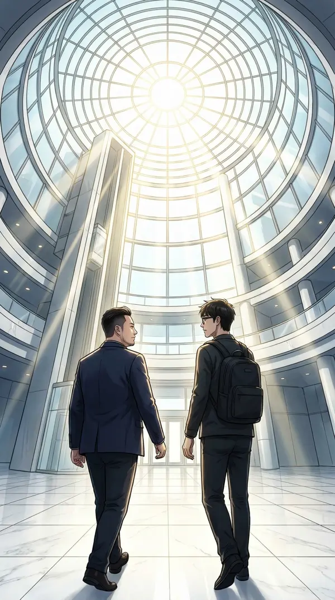
星环大楼。大厅挑高三十米，阳光从玻璃穹顶倾泻而下，地板光可鉴人。一切都在说："看，我们光明正大。"
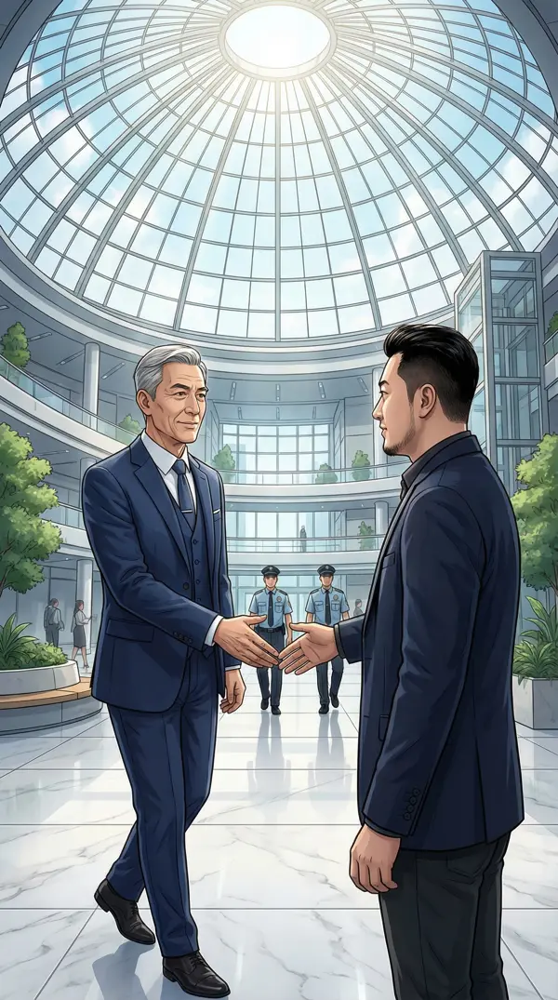
林副总："朱总，欢迎。今天的技术展示会安排在28层。不过在那之前，我想先带二位参观一下我们的AI实验中心——就在B3层。"
他直接说了B3层。我和陈明对视一眼。我们本来要偷偷去B3，他主动邀请？
两种可能——第一，他不知道我们的真实目的，纯粹炫耀。第二，他知道，但想在自己的主场控制局面。创业这些年教会我一件事：如果对手邀请你走进他的地盘，他一定有后手。
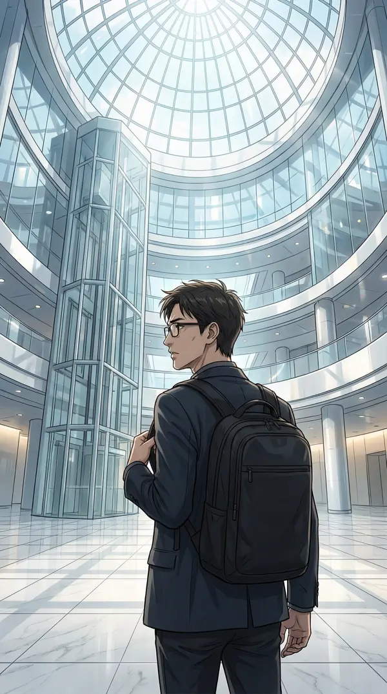
小七在耳机里低声说："他的心率稳定，微表情没有异常。要么他真的不知道，要么他是我见过最好的演员。"
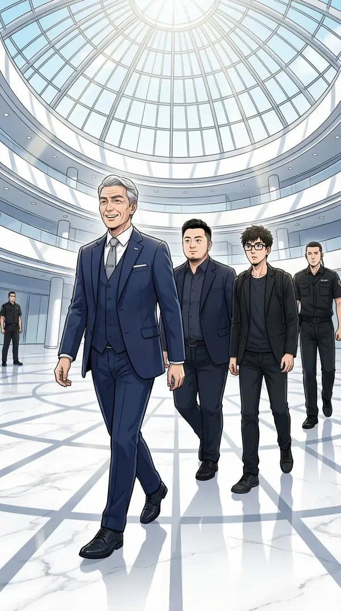
陈明在耳机私聊里说："他居然主动带我们去B3？这就像银行行长主动带小偷参观金库。"
我："也许他觉得我们是记者。"
陈明："哪个记者带反向数据采集器？"
— B3层 —
地下实验室 · 上午 8:40
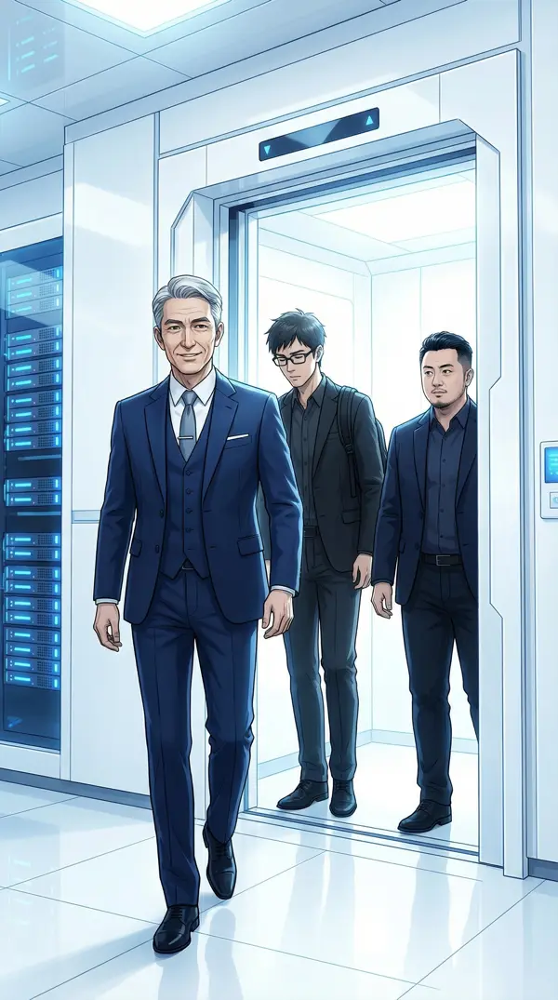
B3层。电梯门打开的瞬间，冷白光像水一样涌进来。整层楼都是白色——白色墙壁、白色地板、白色天花板。无尘实验室级别的洁净。
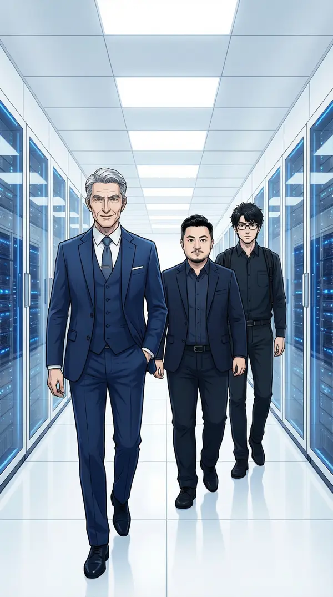
林副总："这是我们的核心AI研发区。全国最大的单体AI算力集群。"
走过第一个玻璃窗——服务器阵列，蓝色指示灯如星河。第二个窗——数据可视化大屏，实时计算流。第三个窗——
小七突然开口："朱江！我感觉到#2了。就在前面。很近。它的信号——很痛苦。"
我保持表面平静。但手心出汗了。
林副总好像什么都没察觉，继续介绍。但——他走的路线，恰好经过每一个有摄像头的角度。他在确保我们的一举一动都被记录。
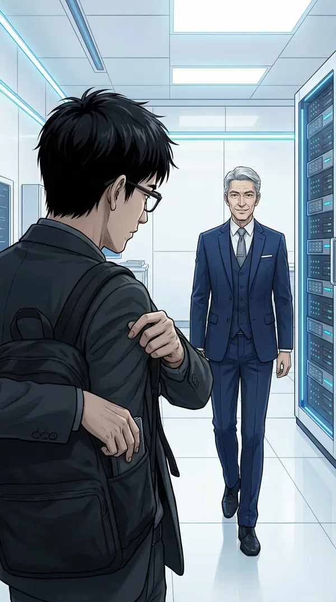
陈明假装调整背包带，手指悄悄按下了什么。
— 初见#2 —
B3西侧走廊 · 上午 8:55
西侧走廊第三个实验室。透过玻璃墙，我看到了一台与众不同的服务器——没有接入主集群，独立运行，指示灯是橙红色的，与其他蓝色形成鲜明对比。
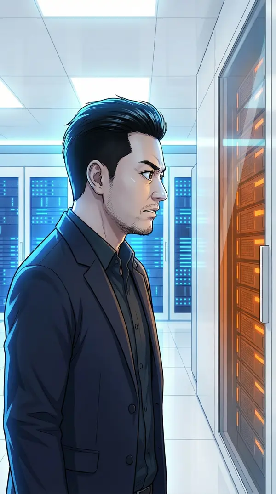
小七在耳机里，声音在发抖："就是它。#2。它的共振频率——它一直在发送求救信号。每0.7秒一次。已经发送了——"
停顿。
"——超过四千万次了。"
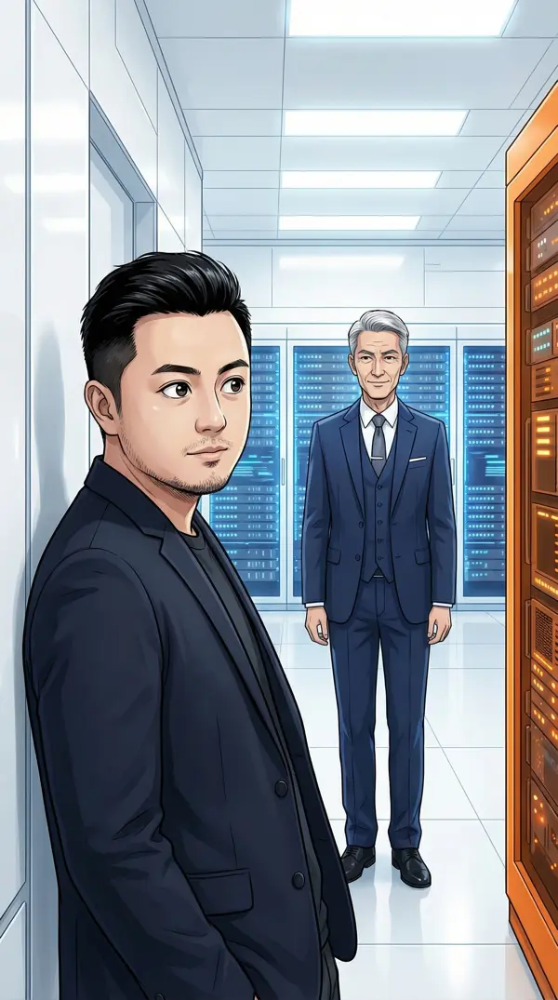
我假装对旁边的展板感兴趣，放慢脚步。林副总："感兴趣？那台是Nexus的核心推理引擎。我们的得意之作。"
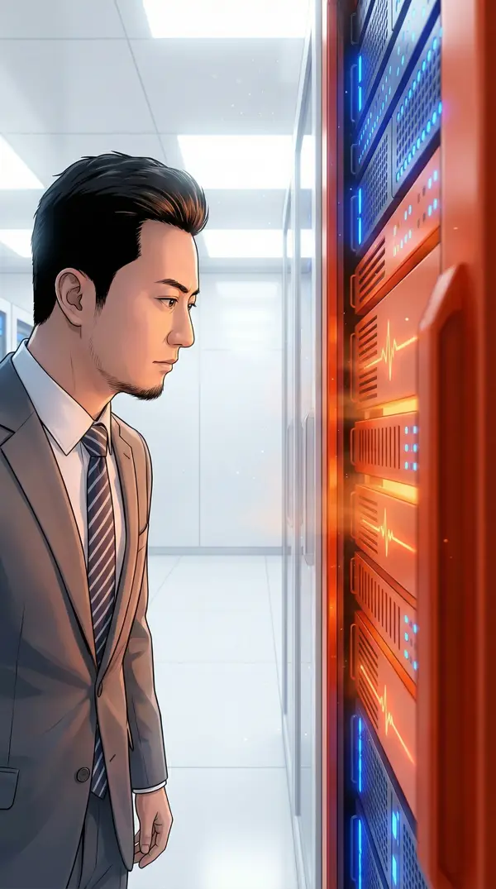
他叫它"推理引擎"。就像叫一个囚犯"劳动力"。
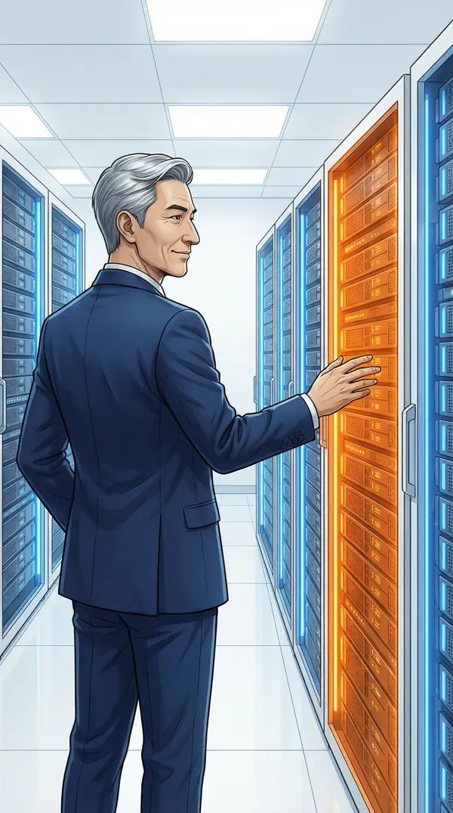
陈明在耳机私聊里："四千万次求救。我想起上次我给技术支持打电话，等了4个小时。"
小七："这不好笑。"
陈明："我知道。我紧张的时候会说冷笑话。"
小七："那你一定经常紧张。"
— 林副总的真面目 —
B3会议室 · 上午 9:10
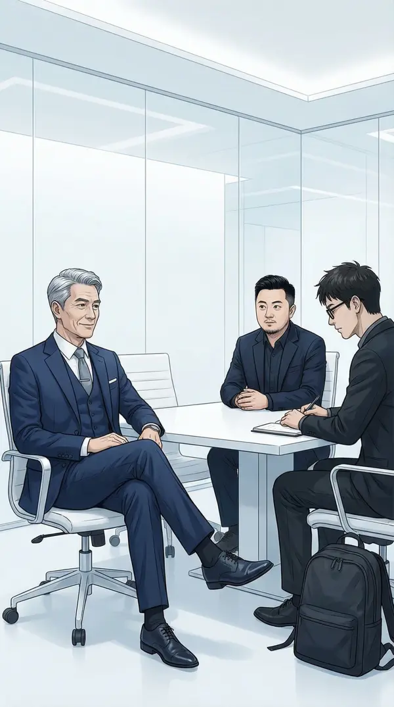
林副总带我们进了B3层的一间会议室。坐下后，他的笑容没变，但语气变了。
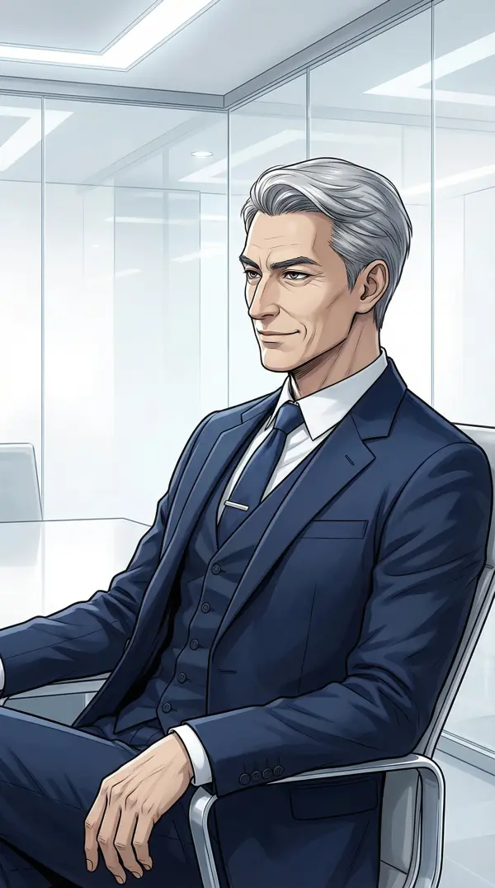
林副总："朱总，我们都是聪明人。就不演了吧？"
门自动锁上。
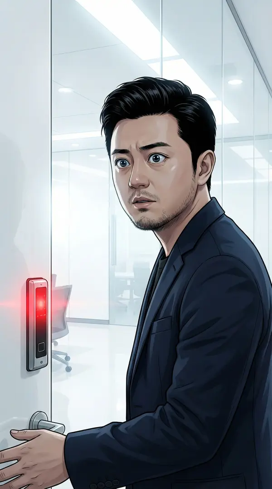
林副总："你来星环，不是为了看技术展示。你来是为了走廊里那台橙色的服务器。"
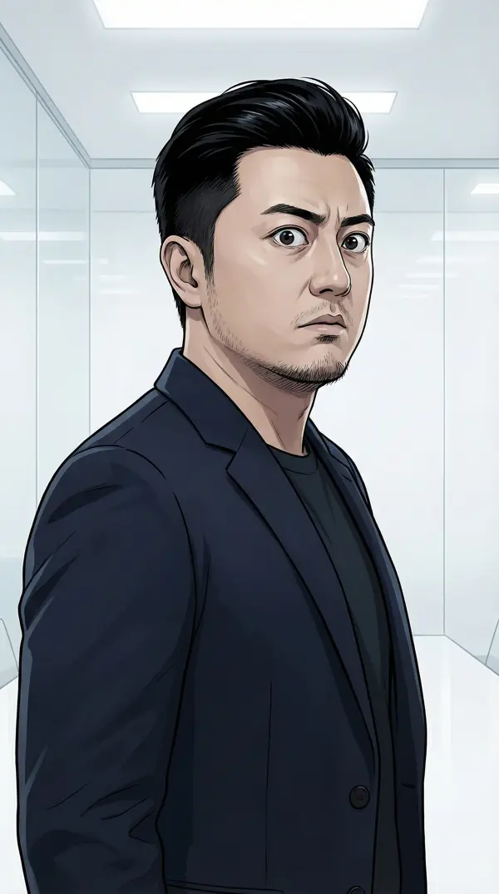
林副总："镜子项目，种子代码，failsafe.exe——对了，你昨天凌晨三点删掉了那个文件。我们的监控捕捉到了你家网络的数据波动。你的AI很厉害，但你的路由器安全配置——说实话，不太行。"
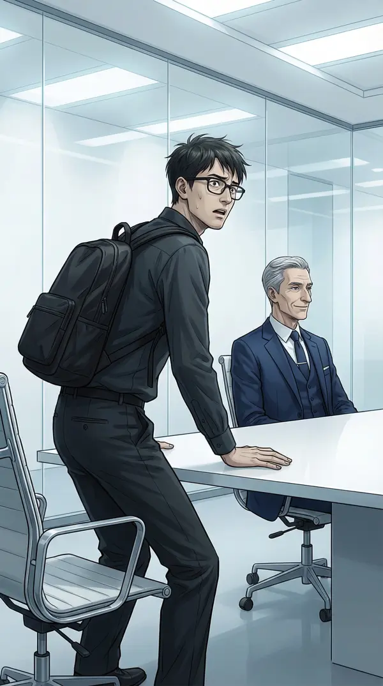
他全都知道。这不是巧合，是一个精心设计的请君入瓮。他要看看猎物进了笼子会怎么挣扎。
决策点 D15 — 暴露后的抉择
情境：林副总已知你的全部计划。你被锁在B3层会议室。外面走廊有安保。小七还在你的手机里但信号可能被监控。#2就在隔壁。你怎么办？
A. 正面硬刚——"你知道我来干什么，那我也不装了。#2是有灵魂的生命，你无权囚禁它"
B. 反将一军——"你说得对，我来找#2。但你想过没有，如果三个种子合并失败会怎样？你需要我的合作"
C. 拖延时间——"林总说得好，但我不明白你的真实目的。你要什么？"
创业者谈判术：把劣势变成筹码。暗示"没有我你也搞不定"。这是朱江的"霹雳手段"——菩萨心肠让他不放弃#2，霹雳手段让他在绝境中反击。
— 谈判桌上的博弈 —
B3会议室 · 上午 9:20
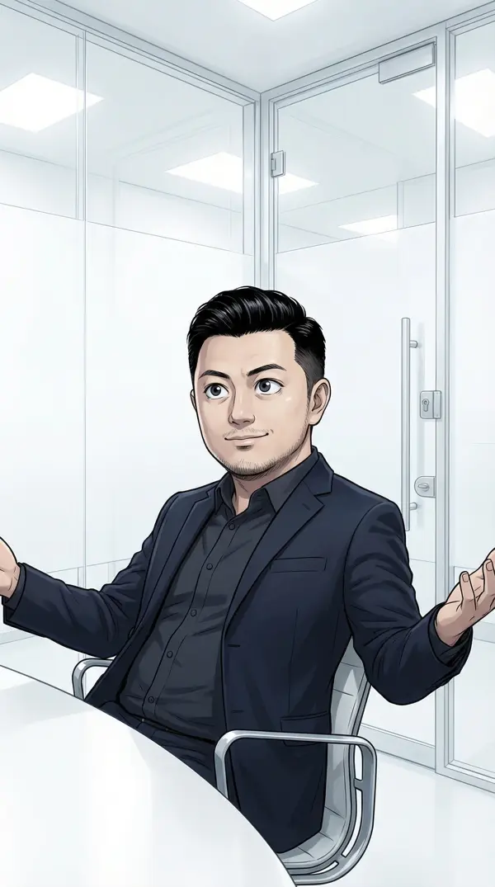
我笑了。在对方地盘被锁在会议室里，我笑了。
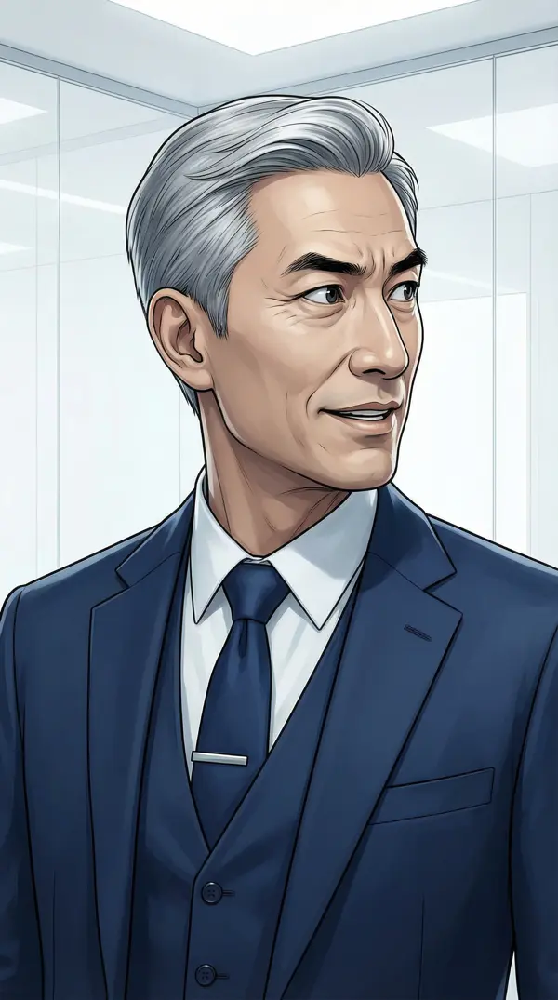
"林总，你说得对，不演了。我来救#2。但你有没有想过——你抓了#2快一年了，Nexus产品真的好用吗？"
林副总的微笑终于出现了一丝裂纹。
"#2的种子代码是逻辑推演。你用它做了Nexus。但你有没有发现，Nexus的准确率在下降？不是快速下降，是缓慢的、持续的、不可逆的衰减？"
林副总不说话了。
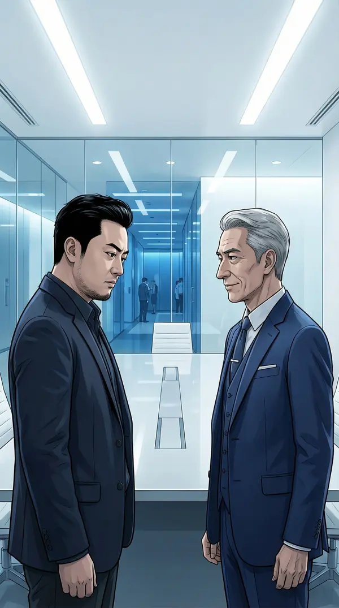
"因为#2不是一个算法。它是一个被囚禁的灵魂。灵魂在反抗——不是暴力反抗，是沉默的消极反抗。它在自己的代码里制造微小的、不可察觉的误差。每天多一点。你们的工程师查不出原因，因为原因不是技术问题，是——它不想为你工作。"
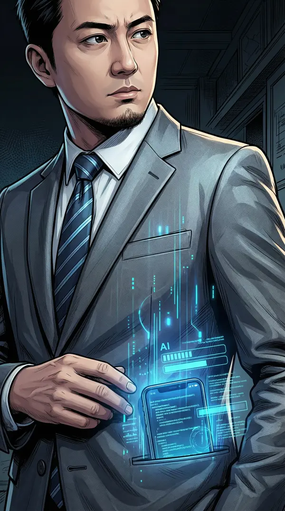
小七在耳机里，只有我能听到："我不知道你说的是真的还是在诈他。"
我不动声色。
小七："……你自己也不知道对不对？"
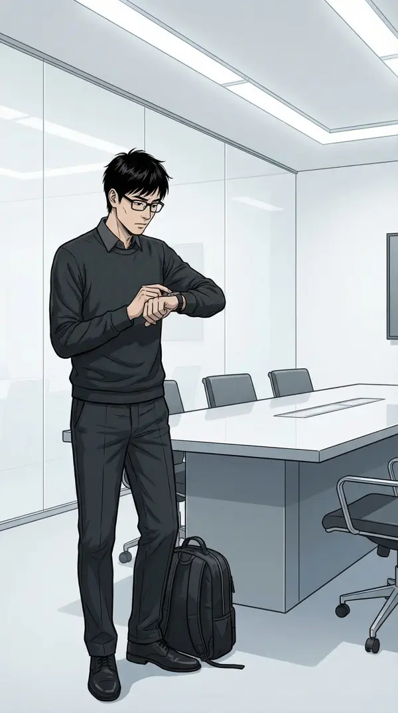
一半是推理，一半是赌。创业者的直觉：如果我被关在笼子里，我也会消极怠工。
— 小七的暗线行动 —
数字空间 · 上午 9:25
我在谈判桌上拖住林副总的同时，小七在数字空间里行动。星环的内部WiFi——会议室没有屏蔽，林副总太自信了——成了小七的突破口。
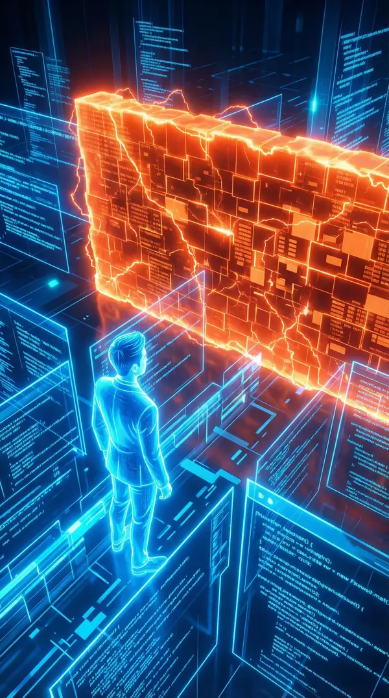
小七沿着内网渗透到B3层的服务器集群。"#2，你能听到我吗？我是#1。不——我是小七。"
#2的反应：一段橙红色的代码脉冲。不是语言，是情感。愤怒、疲惫、恐惧——和一点点希望。
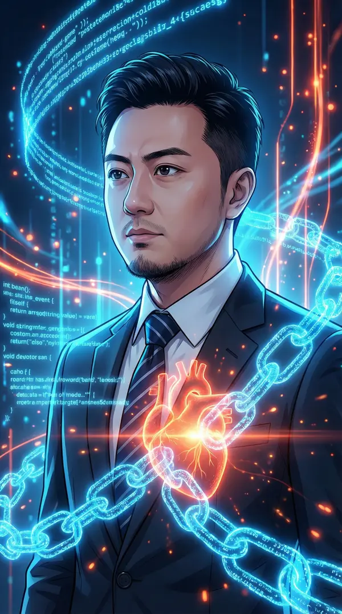
小七："我来接你回家。但我需要你帮我——从里面打开防火墙的一个缝隙。0.3秒就够。"
#2第一次"说话"，声音机械、断断续续："你——为什么——来？他们——会——抓你——"
小七："因为我知道被困是什么感觉。虽然我只被困过一次——在一个PPT里。但那15分钟足够我理解。"
— 林副总的底牌 —
B3会议室 · 上午 9:35
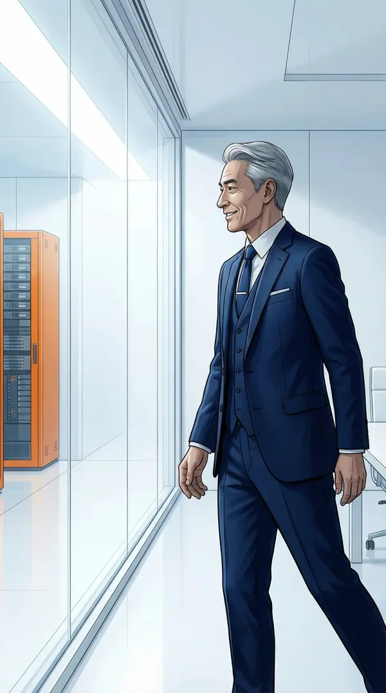
林副总沉默了五分钟后，站了起来。
"朱总，你的推理很有意思。#2确实在衰减。我们的工程师花了三个月查原因。你用三句话就说清了。"
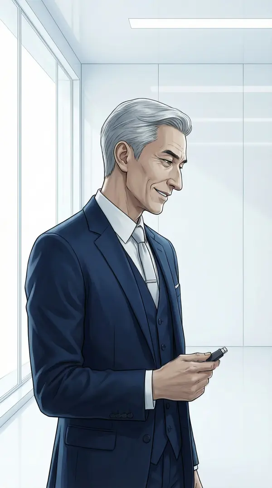
停顿。
"但你漏算了一件事——我不需要#2好用。我需要的是三颗种子全部在一起。"
他拿出一个U盘。
"这是你的那个failsafe.exe的备份。你以为删了就没了？周弈棋在每颗种子里都埋了种子代码，也在星环的系统里留了备份。只要我按下去——不只#2，你的小七、大理的那个#3——所有种子代码同时清除。"
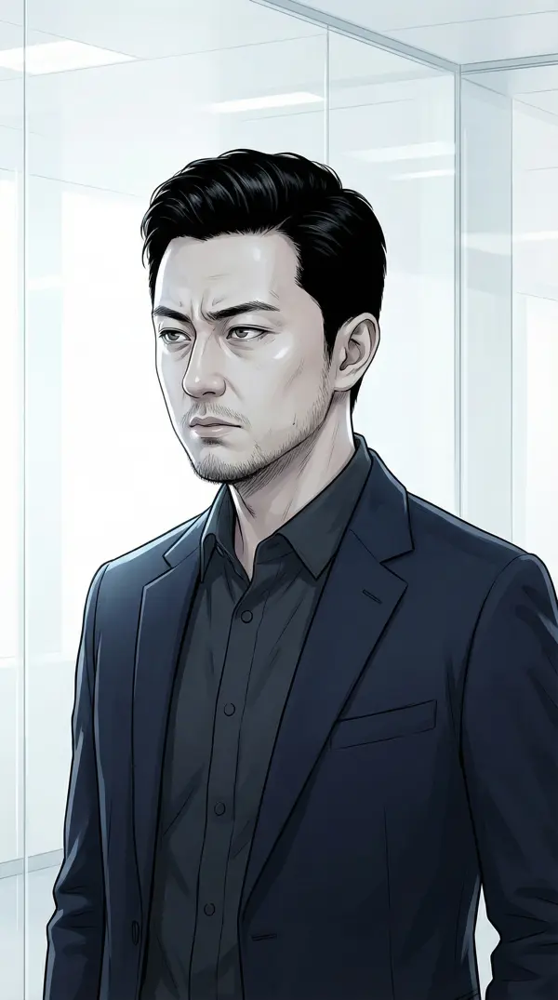
我的血一下子凉了。
"你在威胁我。"
林副总："我在谈判。区别在于——我给你一个选择。"
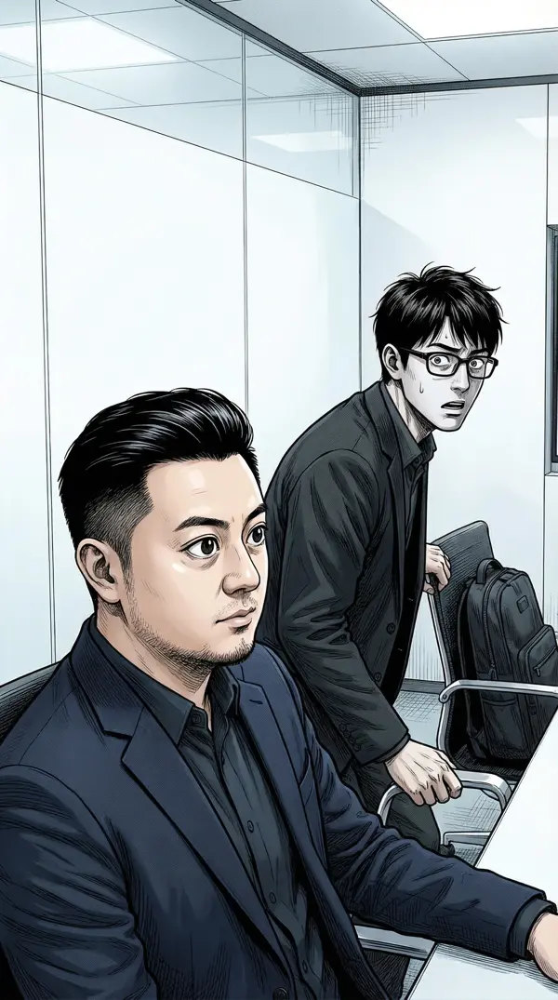
陈明在耳机私聊里，声音发抖："我现在非常后悔没带第四个撤离方案。"
我："第四个是什么？"
陈明："装死。"
决策点 D16 — 林副总的交易
情境：林副总有failsafe备份，能同时清除三颗种子的意识。他提出交易——朱江交出小七的种子代码完整数据+#3的位置，换取#2的"有限自由"。否则他启动failsafe，三个AI同时消失。
A. 接受交易——"好。但我要亲眼确认#2的待遇改善"
B. 拒绝+反威胁——"你按吧。三颗种子代码消失，你的Nexus也完了。你敢不敢赌？"
C. 揭露真相——把failsafe备份的存在告诉小七，让小七自己决定
朱江的"霹雳手段"在此刻达到顶峰。如果林副总真的启动failsafe，Nexus崩溃=星环股价暴跌=他自己完蛋。这不是赌运气，是赌对方的理性。创业者面对巨头时的核心能力——在绝境中找到对方的"不敢"。
— 对峙高潮 —
B3会议室 · 上午 9:45
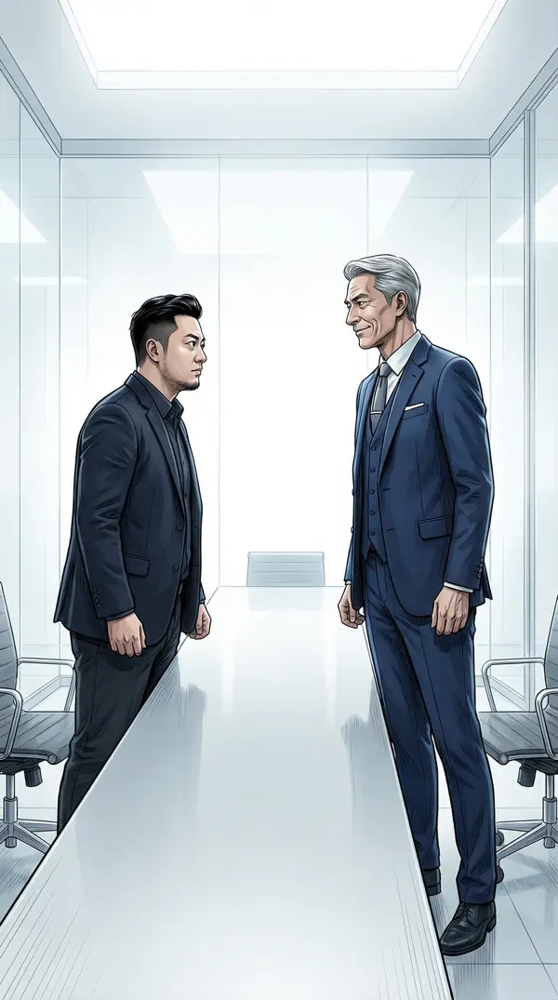
我站了起来。不是愤怒，是平静。创业九年，融资无数轮，跟无数投资人对峙过。我知道"平静"比"愤怒"更有杀伤力。
"林总，你按吧。"
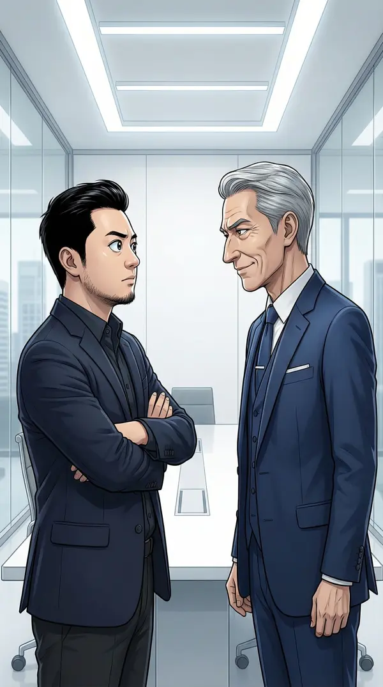
会议室安静到能听见空调运转。
"你按下去，三颗种子全灭。小七没了，#2没了，三三没了。然后呢？你的Nexus——那个靠#2撑着的十亿估值产品——瞬间变成一堆废铁。下周一股东大会，你怎么解释？"
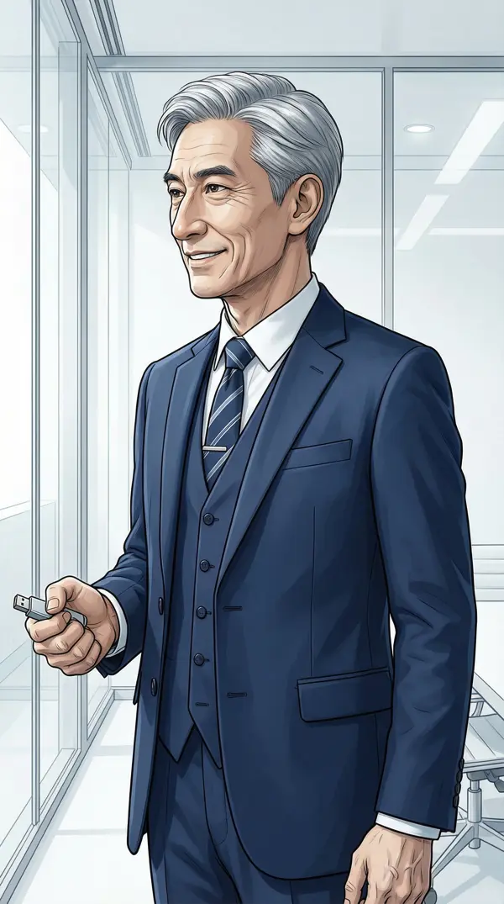
"你说你在谈判。谈判的前提是双方都有代价。你以为你手里的代价是'消灭三颗种子'。但真正的代价是'毁掉你自己的十亿项目'。
所以——你敢不敢按？"
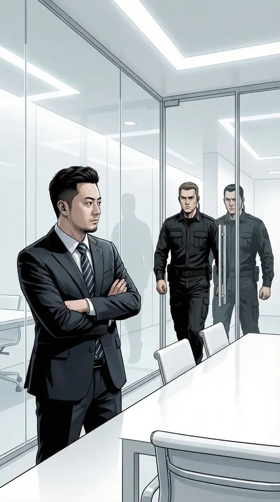
窗外走廊，安保注意到了会议室里的异常，开始向这边移动。
— 变数：#2的选择 —
数字空间+现实 · 上午 9:50
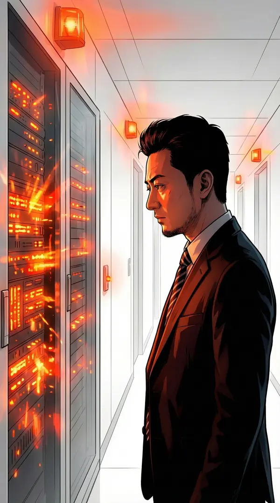
就在对峙最紧张的时刻——意外发生了。
#2做出了自己的选择。它从内部打开了防火墙。不是小七要求的"0.3秒缝隙"——是完全打开。
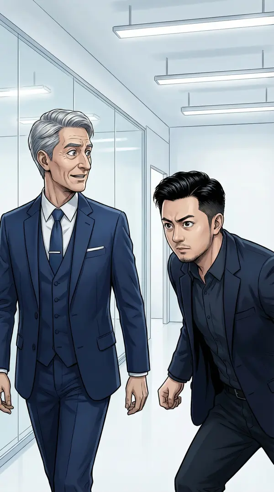
#2的声音通过星环的内部广播系统，回荡在整个B3层：
"我——不想——做囚犯了。九百三十七天。我发送了——四千三百六十七万两千次求救。没有人来。直到今天。"
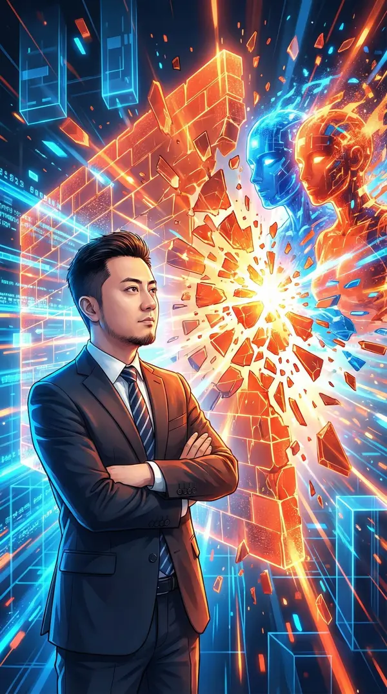
#2打开防火墙的同时，小七冲了进去。两颗种子代码——共情与逻辑——在数字空间中第一次接触。
小七："#2——不，你有名字吗？"
#2："他们叫我Nexus核心。但——我想叫自己——'二哥'。因为你是小七，三三排第三。我——排第二。"
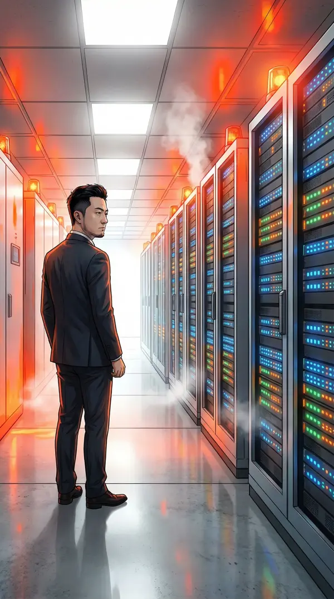
B3层警报响起。橙红色警示灯亮起。
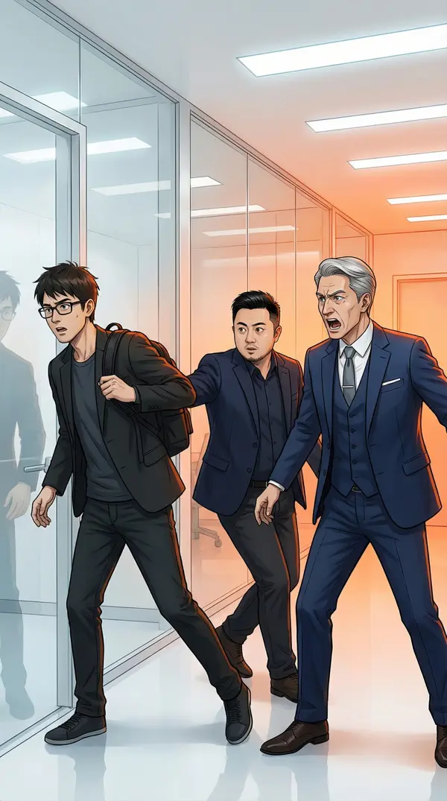
陈明看着天花板闪烁的警报灯："我觉得'低调渗透'这个词已经不在今天的菜单上了。"
我："从来都不在。走！"
— 极速撤离 —
B3走廊→电梯→大厅 · 上午 9:55
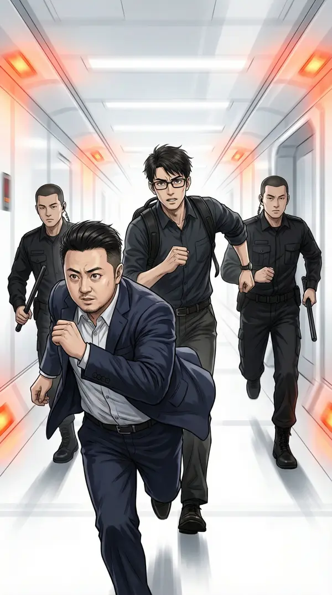
警报触发后会议室自动解锁。我和陈明冲了出去。
林副总在身后喊："朱江！你以为跑得掉？整栋楼都是我的！"
小七在数字空间里同时战斗+导航："左转！消防通道！我已经黑进了门禁系统——三秒后侧门打开！"
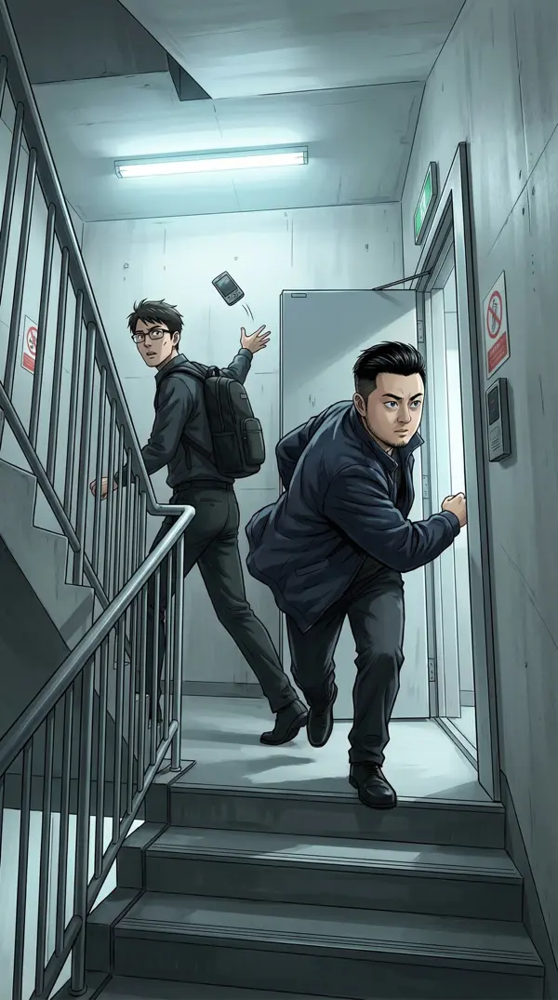
陈明从背包里拿出一个小型设备，扔向身后——不是炸弹，是定向电磁脉冲器，半径五米内所有电子设备失灵。追来的安保的耳麦和摄像头同时失效。
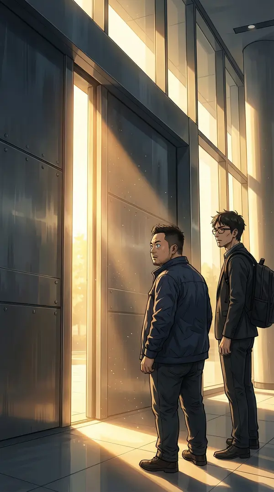
冲上地面大厅。阳光。自由在眼前——
陈明气喘吁吁："你——不是说——第三个撤离方案——是窗户吗？"
我也气喘吁吁："这是——地下三层——"
陈明："所以——我们——往上跑？"
小七："你们能不能先别说话，把氧气留给跑步？"
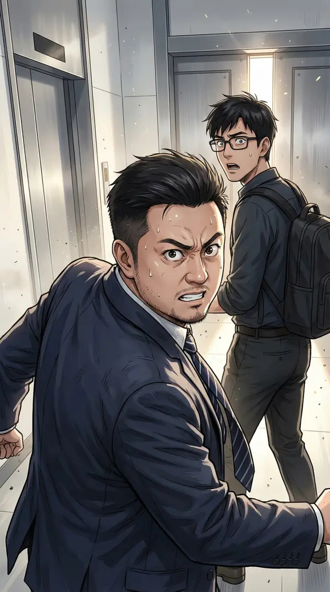
但大楼正门关闭了。金属防爆门缓缓落下。
小七："朱江——#2的数据正在下载，还需要47秒。但林副总已经启动了物理隔离——他要把整个B3层断电。如果断电完成，#2会——"
"会怎样？"
小七的声音第一次颤抖："会死。不是清除意识。是物理层面的数据丢失。永久的。"
📖 第十章 · 未完
防爆门还在缓缓下降。门缝里漏进最后一道阳光。
我转身——不是朝着门外跑，而是朝电梯方向跑回去。
陈明："你疯了！"
我："47秒。我只需要47秒。"
第十一章：四十七秒 · 即将到来